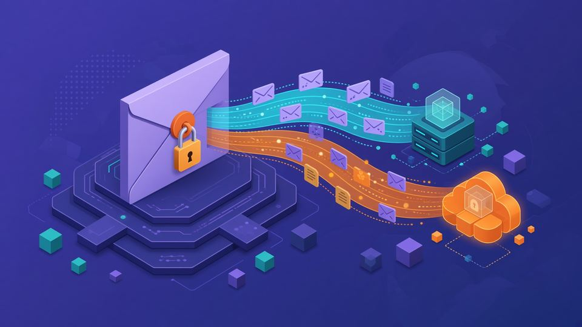
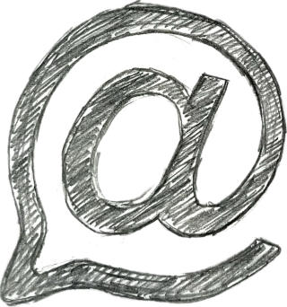
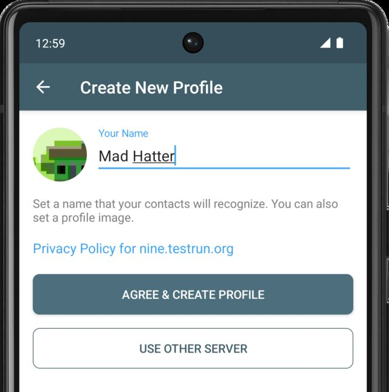
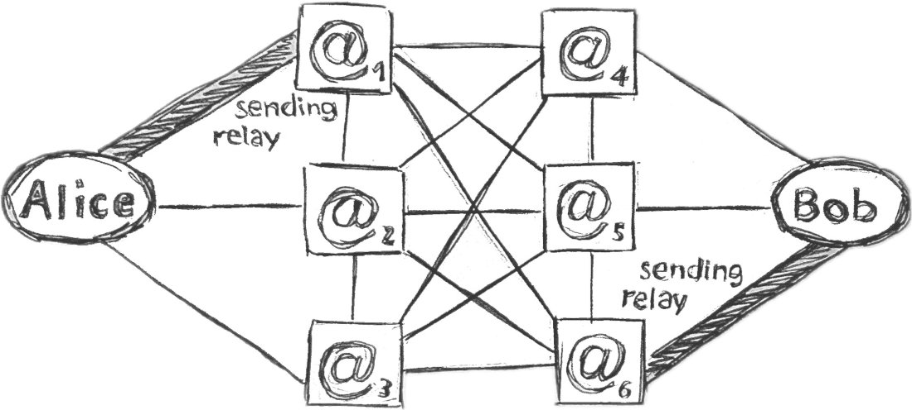
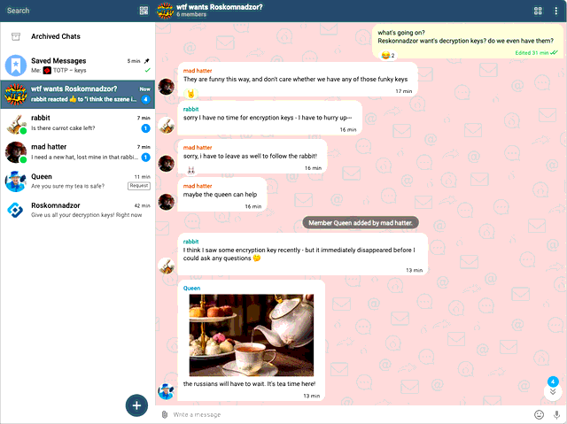
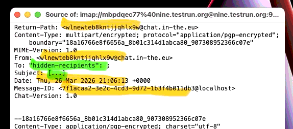
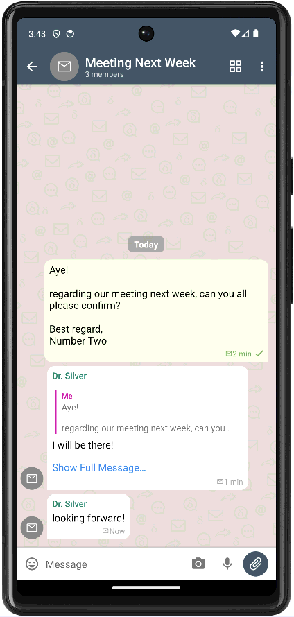
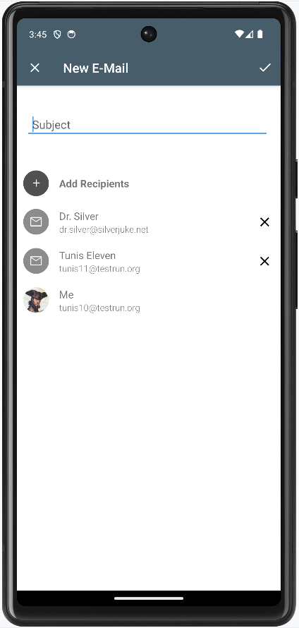

کلید عمومی
این کلید را میتوانید به همه بدهید؛ دیگران با کلید عمومی شما نامه را برایتان قفل میکنند.


دلتاچت صندوق ایمیل را به شما نشان نمیدهد، ولی پیام را مثل یک نامه جابهجا میکند. این صفحه اول خود ایمیل و چتمیل را توضیح میدهد، بعد کلید OpenPGP و در آخر رمزنگاری دلتاچت را. برای نصب به صفحه آموزش بروید.
نشانی ایمیل دو بخش دارد: پیش از @ نام کاربر است و پس از آن دامنه. نمونه ساختگی: sara@example.org. دامنه مشخص میکند نامه باید به کدام سرور برسد.
هر نامه دو بخش دارد: سربرگ (پاکت) که نشان میدهد از چه کسی به چه کسی است، و متن (پیام و پیوستها). نامه با پروتکل SMTP فرستاده و با IMAP دریافت میشود. سرور فرستنده نامه را به سرور دامنه گیرنده میرساند و نامه تا وقتی برنامه گیرنده آن را بردارد در صندوق میماند.
برنامه ایمیل کلاسیک همین صندوق را فهرست میکند و موضوع، فرستنده و متن را جدا نشان میدهد. اگر نامه رمزنگاری سراسری نداشته باشد، سرورهای هر دو طرف متن آن را میبینند. مسیر بین سرورها معمولاً با TLS رمزنگاری میشود، ولی این فقط رمزنگاری مسیر است، نه رمزنگاری بین فرستنده و گیرنده.
هنگام ساخت نمایه، برنامه یک نشانی میسازد و کلیدها را روی دستگاه شما نگه میدارد؛ لازم نیست گذرواژهای یادداشت کنید. نام و تصویری که انتخاب میکنید فقط برای مخاطبهاست و به سرور داده نمیشود.

رله (در برنامه فارسی: گذرگاه) چتمیل سرور ایمیلی است که برای گپ تنظیم شده: نشانی تصادفی میدهد، شماره تلفن نمیخواهد، نامه بیرمزنگاری را نمیپذیرد و نامه را پس از تحویل پاک میکند. اگر دستگاه گیرنده خاموش باشد، نامه تا چند هفته روی رله میماند و بعد پاک میشود.
رلهها را گروهها و افراد مختلف اداره میکنند، نه یک شرکت. داده گروه، نام و تصویر روی رله ذخیره نمیشود. رله پیشفرض خودکار تنظیم میشود؛ برای تغییر یا افزودن رله: تنظیمات ← پیشرفته ← رلهها. پیش از حذف آخرین رله باید رله دیگری اضافه کنید.
نمایه چتمیل با صندوقهای ایمیل کلاسیک نامه بیرمزنگاری رد و بدل نمیکند؛ طرف مقابل باید دلتاچت یا برنامهای سازگار با چتمیل داشته باشد. برای نامهنگاری با صندوقهای کلاسیک، نمایه ایمیل کلاسیک لازم است (پایین همین صفحه).

OpenPGP استاندارد رمزنگاری نامه است و GnuPG (یا GPG) یکی از برنامههایی است که آن را پیاده میکند. دلتاچت از GnuPG استفاده نمیکند. این بخش فقط سازوکار کلی را توضیح میدهد تا در بخش بعد روشن شود دلتاچت از کدام بخش آن استفاده میکند.
این کلید را میتوانید به همه بدهید؛ دیگران با کلید عمومی شما نامه را برایتان قفل میکنند.
این کلید فقط پیش خودتان میماند و تنها همین کلید قفل را باز میکند. اگر لو برود، نامههای قبلیای که با کلید عمومی جفت آن قفل شدهاند هم خوانده میشوند.
پس برای فرستادن پیام خصوصی، فرستنده به کلید عمومی گیرنده نیاز دارد: قفل با کلید عمومی گیرنده زده میشود و فقط کلید خصوصی گیرنده آن را باز میکند. سرورهای میان راه متن را نمیبینند، به شرطی که کلید واقعاً مال گیرنده باشد و در راه عوض نشده باشد.
امضا برعکس قفل کار میکند: آن را با کلید خصوصی خودتان میزنید تا معلوم شود نامه از شماست، و دیگران با کلید عمومیتان بررسیاش میکنند.
در ایمیل کلاسیک این کلیدها را دستی رد و بدل میکنند یا از سرورهای کلید میگیرند. برای اطمینان از اینکه کلید مال خود شخص است، اثر انگشت آن را با او مقایسه میکنند. اگر کلید اشتباهی را بهجای کلید او بپذیرید، نامه را برای شخص دیگری قفل کردهاید.
دلتاچت از OpenPGP استفاده میکند، ولی فقط از یک زیرمجموعه امن آن. پیادهسازی آن کتابخانه rPGP به زبان Rust است، نه GnuPG، و این کتابخانه در ۲۰۱۹ و ۲۰۲۴ بهطور مستقل بررسی شده است. دلتاچت فقط پیامی را رمزنگاریشده حساب میکند که کل آن، از جمله پیوست و نام فایل، هم رمزنگاری و هم امضا شده باشد؛ امضای تنها کافی نیست.

هنگام ساخت نمایه، برنامه جفت کلید را روی همان دستگاه میسازد و کلید خصوصی از دستگاه بیرون نمیرود. لازم نیست کلید قدیمی وارد کنید و برنامه مدیریت دستی کلید هم ندارد. دلتاچت از سرورهای کلید OpenPGP هم استفاده نمیکند.
Autocrypt رمزنگاری را بین دو برنامه خودکار راه میاندازد، ولی بهتنهایی فقط در برابر کسی امن است که نامه را در راه میخواند، نه کسی که بتواند سربرگ نامه را تغییر دهد و کلید را عوض کند. SecureJoin برای همین است: اسکن QR یا باز کردن لینک دعوت، اطلاعات کلید را از یک راه دوم رد و بدل میکند تا رله نتواند کلید را وسط راه عوض کند. پس از آن، Autocrypt رمزنگاری را بین مخاطبها و اعضای گروه حفظ میکند. وقتی مخاطبی را داخل گپ به دیگران معرفی میکنید، کلید او هم همراهش میرود.

رله چتمیل نامه بیرمزنگاری را نمیپذیرد.
در سربرگی که رله میبیند، موضوع فقط «[...]» است و فهرست گیرندهها پنهان است؛ بدنه نامه یک بسته رمزنگاریشده OpenPGP است. رله فقط نشانی فرستنده و گیرنده (که بهطور پیشفرض تصادفیاند)، زمان و اندازه پیام را میبیند. نام، تصویر و اعضای گروه داخل بخش رمزنگاریشدهاند.
رازداری پیشرو و رمزنگاری پساکوانتومی؟ هنوز نه. راهنمای رسمی پیادهسازی کامل رازداری پیشرو و رمزنگاری پساکوانتومی را با Autocrypt v2 برای سال ۲۰۲۶ اعلام کرده است. تا آن زمان، اگر کلید خصوصی لو برود و کسی نامههای رمزنگاریشده را از قبل جمع کرده باشد، میتواند آنها را بخواند. پاسخ کوتاهتر در بخش رمز و امنیت پرسشها.
اسکن QR یا باز کردن لینک دعوت همان SecureJoin است که بالاتر آمد: دو برنامه اطلاعات کلید را رد و بدل میکنند و بعد از آن لازم نیست کاری دستی برای کلید انجام دهید.
میشود نمایه را روی یک نشانی ایمیل کلاسیک هم ساخت: نمایه تازه ← استفاده از سرور دیگر ← استفاده از رایانامه کلاسیک بهعنوان گذرگاه. این نمایه میتواند به صندوقهای کلاسیک نامه بیرمزنگاری هم بفرستد.


آن نشانی را همزمان در برنامه یا سایت ایمیل دیگری باز نکنید؛ ممکن است نامههای رمزنگاریشده در صندوق جا بمانند، اعلان دو بار بیاید یا نامهای اشتباهی پاک شود. طبق راهنمای رسمی، این نشانی باید فقط در برنامههای چتمیل استفاده شود.
سرویسهای ایمیل کلاسیک معمولاً اعلان فوری چتمیل را ندارند. برای گپ روزمره یک نمایه چتمیل جدا داشته باشید و نمایه کلاسیک را فقط برای نامه به صندوقهای کلاسیک نگه دارید.